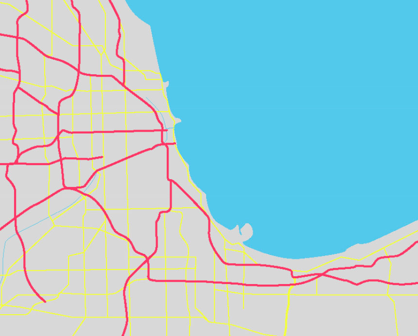
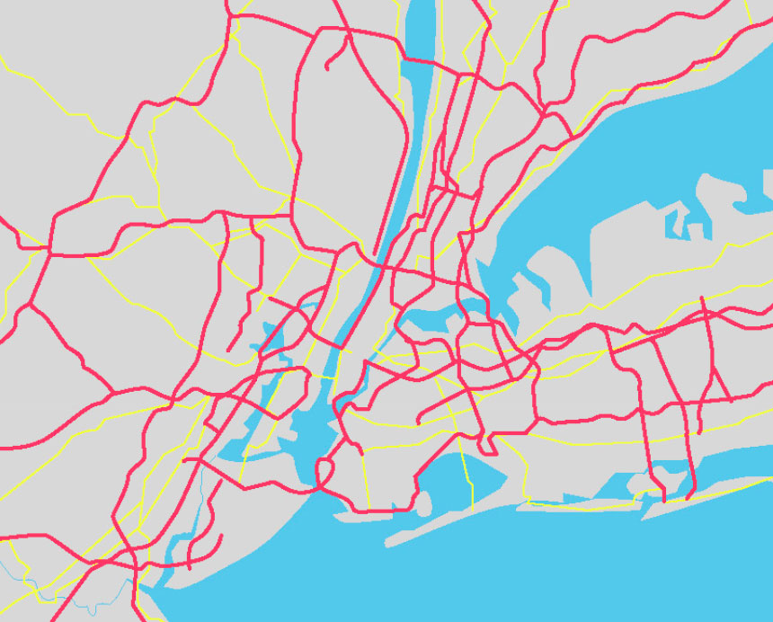

Cultivating scientific minds and healthy citizens from the assets of our communities.
Our lives depend on our neighborhoods. But we lack high quality information about where to go for the resources we need most.
MAPSCorps exists to improve access to the resources we all need to do good, stay well and live long.
Mission
We engage youth as data scientists to produce high quality data about community assets that everyone can use to improve the human condition.
Meaningful Youth Employment
We train high school youth to use science and technology to identify all available assets and public-facing businesses in their communities. 49% of our students report MAPSCorps as their first paid employment.
Community Vitality & Visibility
Our data boosts local economies by improving visibility for local businesses and organizations. We’ve mapped more than 25,000 operating community resources in Chicago and New York City.
500+ meaningful, paid work experiences for local high school youth and college-age mentors since 2008.
History
Meaningful, Active, Productive Science in Service to Communities
MAPSCorps is a 501(c)3 nonprofit based on Chicago’s South Side. The organization grew out of the laboratory of Stacy Lindau, MD, MAPP, associate professor at the University of Chicago.
Dr. Lindau’s interdisciplinary lab uses an asset-based, community-engaged approach to engineer solutions to injustice, with a focus on health and economic disparities. In 2009, this led to the creation of MAPSCorps, a successful, scalable model for youth summer employment and STEM (Science, Technology, Engineering, Math and Health) training. The program operated out of the South Side Health and Vitality Studies at the University of Chicago, in collaboration with a variety of university and community partners, until 2015.
In 2016, MAPSCorps became an independent nonprofit, with successful programs in Chicago and New York City. In summer 2016, MAPSCorps will implement pilot programs in Niagara Falls, NY and Nash Edgecombe counties, NC.
Our Communities
We operate in predominantly high poverty communities.
MAPSCorps promotes community health and economic vitality by sharing high-quality, up-to-date data with social workers, healthcare providers and residents. We help people connect to services close to where they live, including resources for healthy eating and active living.
Engaging youth as data scientists to improve the human condition.
Our Partners
We partner with local organizations to elevate the quality and reach of our programs.
Community partners help recruit youth mappers, host events, and serve as local champions of the program.
- 
- 
Engineering solutions to injustice while creating meaningful jobs.
Impact
Youth
MAPSCorps students become confident and capable communicators, equipped with job-ready skills. They gain invaluable experience in research, data collection and technology while learning the importance of healthy habits and lifelong wellness.
Community
MAPSCorps provides reliable access to high quality information about local resources, enabling healthcare professionals, policymakers, researchers, leaders and residents to improve the health and well-being of all people, businesses and communities.
NOWPOW
MAPSCorps powers the data engine for NowPow, a healthcare technology program that connects low-income patients with hyper-local, high quality health and social resources, from stress management and smoking cessation to fitness classes and family planning. In turn, NowPow provides MAPSCorps with fiscal support.
Learn MoreCook County Land Bank
MAPSCorps partners with the Cook County Land Bank to inventory the condition of vacant and distressed properties in Chicago. The Land Bank use the information to promote redevelopment and reuse of the properties to revitalize communities.
Learn MoreVoices for Youth Count
MAPSCorps supports VYC’s ongoing research and homeless policy formulation by collecting nformation about homeless youth and encampments in Chicago’s south and west sides.
Learn More